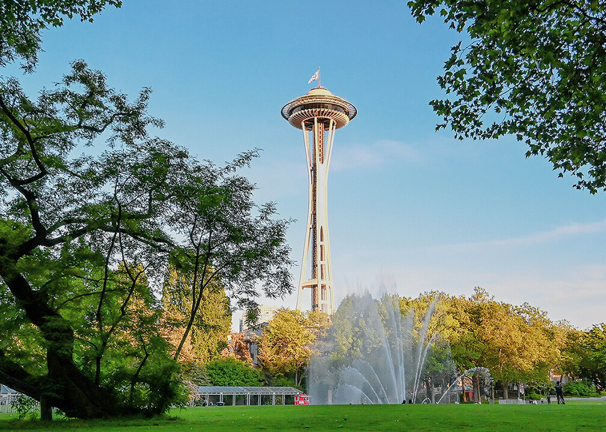

Seattle Center
 Families visiting Seattle should spend some time at the 74-acre Seattle Center, an active civic, arts, and gathering place. The Seattle Center is home to many attractions, including the iconic Space Needle, the Chihuly Garden and Glass exhibition, the Seattle Center Skate Plaza, and the Seattle Center Armory. Children will enjoy playing in the International Fountain, mainstay from the World's Fair, and at the Artists at Play playground.
Seattle Center hosts thousands of events and programs each year, such as the Seattle Center Festal, Concerts and Movies at the Mural, Winterfest, and Artists at the Center. Seattle Center is home to over thirty cultural, educational, and entertainment organizations and attracts millions of visitors each year.
- Hours: 7:00 AM-9:00 PM daily
- Location and Parking: 305 Harrison Street. Visitors can park in one of three convenient parking garages or ride the Monorail to the Seattle Center from Westlake Center.
- Website: Seattle Center
Pacific Science Center
The Pacific Science Center's mission is to “ignite the curiosity in every child and fuel a passion for discovery, experimentation, and critical thinking in all of us.” The center features IMAX Theaters, the Laser Dome, and the Planetarium. The center is also home to many fascinating exhibits, such as Adventures with Sound, Dinosaurs: a Journey Through Time, and Science on a Sphere. Younger children will enjoy exploring the Just for Tots exhibit. The center regularly hosts events, such as Laser Pride, Science & a Movie, and Exploration for All, a free, monthly, sensory-friendly event.
- Hours: 10:00 AM-5:00 PM daily
- Location and Parking: 200 2nd Ave. N. (in Seattle Center)
- Admission: Tickets and memberships can be purchased online or at the door, and general admission includes unlimited Planetarium and daytime laser shows. The Pacific Science Center offers discounted tickets for children under seventeen, and children under three are free.
- Website: Pacific Science Center
Seattle Waterfront
Families can spend a fun and relaxing day at the Seattle Waterfront, which features many restaurants and attractions. Visitors walking along the waterfront will enjoy fish and chips at Ivar's, see spectacular ocean and mountain views, and experience many permanent artworks, such as the Waterfront (or FitzGerald) Fountain on Pier 58. Visitors can enjoy a Salish Sea Tour or a ferry ride to Bremerton or Bainbridge Island.
Families should spend some time at Miner's Landing, located on the historic Pier 57. Miner's Landing is home to the Alaskan Sourdough Bakery, The Crab Pot, and The Fisherman's Restaurant. Visitors to Miner's Landing can also experience a ride on the Seattle Great Wheel and view one of the Great Wheel's evening LED light shows (including over 500,000 LED lights). Children will enjoy a trip to the Klondike Arcade, a ride on the Miner's Landing Carousel, and premium ice cream at the Seattle Creamery.
- Hours: 6:00 AM-9:00 PM daily
- Parking: Free garage parking daily and free street parking on Sundays.
- Website: Seattle Waterfront
Seattle Aquarium
The Seattle Aquarium features six major exhibits, including Window on Washington Waters, Life on the Edge, Pacific Coral Reef, Birds & Shores, the Underwater Dome, and Marine Mammals. The aquarium offers daily presentations, such as Marine Mammal Feeding and All About Our Harbor Seals, and hands-on experiences. Children can also play in the Caring Cove and enjoy a snack or meal at the Aquarium Cafe.
- Hours: 9:30 AM-6:00 PM daily
- Location and Parking: 1483 Alaskan Way (along the Seattle Waterfront). Free parking is available at the aquarium.
- Admission: Tickets and memberships can be purchased online or at the door. The aquarium offers discounted tickets for children under thirteen, and children under three are free. The aquarium also offers complimentary admission tickets and discounted memberships to foster and kinship families.
- Website: Pacific Science Center
Woodland Park Zoo
Woodland Park Zoo is home to more than 900 animals, including over 250 species, such as lions, giraffes, armadillos, and zebras. The zoo encompasses 92 acres, which is divided into different natural habitats, such as the African Savanna, Living Northwest Trail, Australasia, and Tropical Rain Forest. In addition to visiting the zoo's award-winning exhibits, children can ride the historic carousel, interact with butterflies in Molbak's Butterfly Garden, explore Zoomazium, and pet domestic farm animals, in the Family Farm.
- Hours: 9:30 AM-6:00 PM daily
- Location and Parking: 5500 Phinney Ave. N. Paid parking is available in multiple zoo parking lots.
- Admission: Tickets and admission can be purchased online or at the gate. The zoo offers discounted tickets for children and discounted memberships for foster and kinship families. Admission is free for children under three years old.
- Website: Woodland Park Zoo
Pike Place Market
Pike Place Market was established in 1907 and today features over 500 small businesses, including local farmers, artists, and craftspeople. Families can enjoy eating at the Daily Dozen Doughnut Company and Shug's Soda Fountain & Ice Cream, shopping at Robot vs. Sloth and Sweetie's Candy, and sitting for caricatures at Over the Line Art. Don't forget to check out Pike Place Fish Market and the market's mascot, Rachel the Piggy Bank.
- Hours: 10:00 AM-5:00 PM daily (with some restaurants staying open much later)
- Location and Parking: Pike Place Market is located across nine acres, from 1st Avenue to Western Avenue (east to west) and from Virginia Street to just past Pike Street (north to south). Parking is available in the Pike Place Market parking garage. Street parking is free on Sundays.
- Website: Pike Place Market